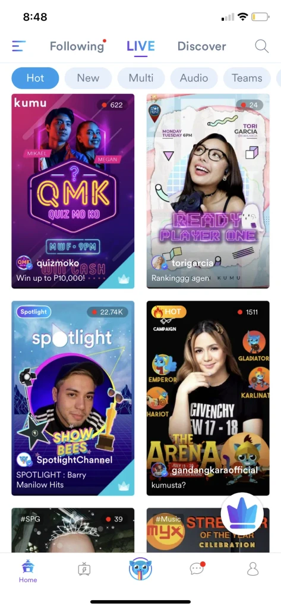
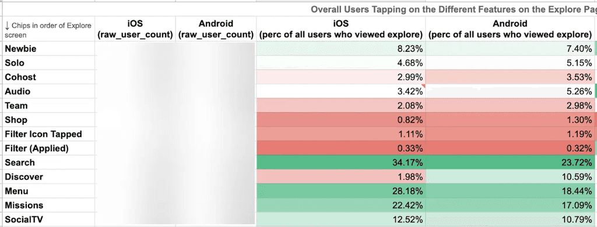

Kumu App Navigation Redesign
Redesigning how new and existing users navigate and find key features and experiences in the app
Kumu is the largest social entertainment app in the Philippines. We have +10 million users (82% Millennial and GenZ) visiting 60 million times per month. Our users average over an hour per day on the app, supporting thousands of income-earning Creators in 50+ countries around the world.
Surveys ran by the UX research team showed that newly onboarded users downloaded the app because they saw it in social media ads and they heard it being recommended by Filipino celebrities. They heard that it was a livestreaming app but they didn’t understand yet what they could use it for. So, one of the challenges we’ve had has been onboarding new users and helping them experience the fun of making authentic connections in Kumu.
"How might we make the app easier to navigate for both new and existing users?"
What We Knew
New users want to establish a mental model of the app
Looking at app reviews, we saw that “confusion” was a common sentiment from new users. And, based on research conducted by the UX research team, we also learned that new users felt the homepage was overwhelming. They would spend hours scrolling through the homepage and joining streams to try to understand how to use Kumu.
This was supported by data too. We saw that one of the first behaviors new users did was to click around, explore the app, and try to get a feel of what Kumu is and what they could do here.
“Daming kailangan aralin pag new users. Pumapasok ako sa streams para matuto. Iniexplain lang niya kung paano gamitin. Masungit din siya so hindi ko po makausap ng maayos.”
(Translation: You need to learn a lot as a new user. I enter streams to learn. They explain how to use it. But they’re grumpy so you can’t talk to them properly.)
Kumu's app information architecture was poor
Even though we provided new users with a quick onboarding tour, there was a lot of jargon left unexplained. When we talked to our users, these were some of the common sentiments:
- (From the homepage) What does Following mean? What are Hot, New, Multi, Audio, and Teams? What do the icons in the bottom navigation mean?
- (From the side menu) What are Campaigns, Klips, Leaderboard, and Missions?
- (From the Profile menu) This isn’t what a Profile page in a social app usually looks like? Is the Missions here different from the one on the side menu? What about Campaigns and Leaderboard?
We learned that new users were overwhelmed with the variety of features they saw when exploring the app and this made it more difficult for them to understand and experience the value proposition.
Notifications are a critical part of the Kumu experience
When we looked at the data, we saw that the Notifications page (which was still buried in the side menu) had increased usage after we released the “User Followed You” notification. From an average of X users per week, it quickly grew to Y users per week.
We looked more into the data and saw that less than 25% of users clicked on the side menu. But, of those who clicked on the side menu, 50% clicked Notifications, which had the highest click-thru rate among the menu items.
Design Strategy
- Remove redundant elements. Streamline the different menus to eliminate duplicate paths.
- Elevate key features. Bring critical features, like Notifications, to the forefront.
- Adopt familiar patterns. Leverage navigation conventions users already understand.
Brainstorming
We had been contemplating how to tackle rearranging our app’s navigation and improve users' mental model of the app for a few months now. Kumu's chief product officer, Crystal Widjaja, came up with a draft for the mobile app's new information architecture.
Having been frustrated by our not-so-user-friendly navigation, I was also quite eager to share a few other possible design explorations.

Finally, Crystal selected "Exploration C". How did we know this was the right decision? At this point, it was an educated guess. The selected exploration seems to address the main challenges that we had:
- New users try to establish a mental model of the app. Exploration C was a familiar layout, not too dissimilar from the information architecture of Twitter, LinkedIn, and Instagram.
- The information architecture of the app was poor. Exploration C consolidated a lot of the redundant entry points under the side menu.
- Notifications are a key part of the current customer journey. Exploration C featured the entry point to Notifications in the main navigation.
Testing Assumptions
Since this was still an educated guess, our next step would be to test if the new information architecture solved our problems. And, because this was a massive change in navigation, we also wanted to know if the change might harm any working user flow that we have.
Usability Test Summary
Getting help from the UX research team, here’s a quick rundown of the completion rate of each task:
- Accessing Profile - 93.75% completion
- Accessing Notifications - 93.75% completion rate
- Accessing Notification Settings - 100% completion rate
- Accessing My Watchlist - 66.75% completion rate
- Adding FB friends - 81.25% completion rate
- Sharing profile link - 68.75% completion
- Scanning QR code - 87.5% completion rate
- Editing my address - 81.85% completion rate
Overall, participants shared they had a good experience with the new changes in the new navigation design app.
"All of us are used to seeing notifications here [Menu Tab]. It makes me want to see if I’m gaining more followers, are my friends livestreaming? Notifications won’t get buried anymore."
— Participant #2
Results
Impact on Metrics
- Significant increase in views for Notifications page.
- Significant increase in views for My Missions
- Increase in views for My Watchlist, Klips, and a revenue-generating Ad Banner
- Significant increase in usage for Wallet after the duplicate entry points were consolidated inside the side menu
- Significant increase in views for Profile by July 20 with the new access point
Key Learnings
- Design drives alignment and makes ideas concrete: With UX Research constrained by their backlog, tangible design explorations made abstract navigation problems concrete and rallied stakeholder support without waiting for comprehensive research.
- Listen to user behavior, not just feedback: Analytics revealed the importance of notifications despite users not explicitly mentioning it
- Adopt familiar patterns: Using navigation conventions from popular apps accelerated user understanding
- Test rigorously: Validating with real users prevented potential missteps
- Implement strategically: Phased rollout minimized disruption while maximizing learning